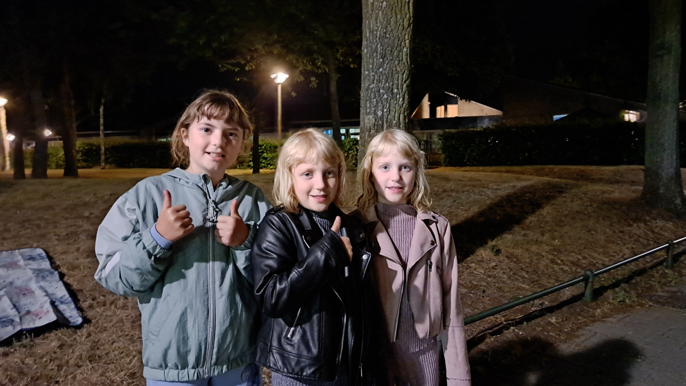
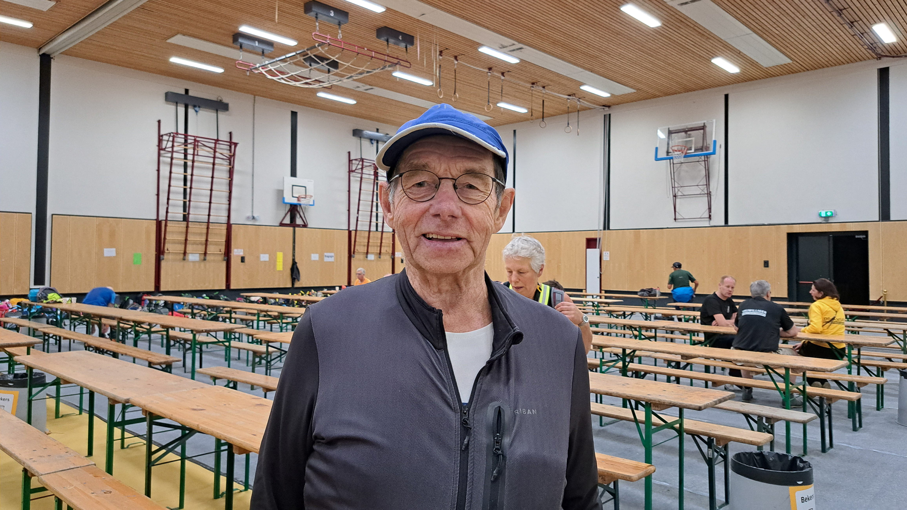
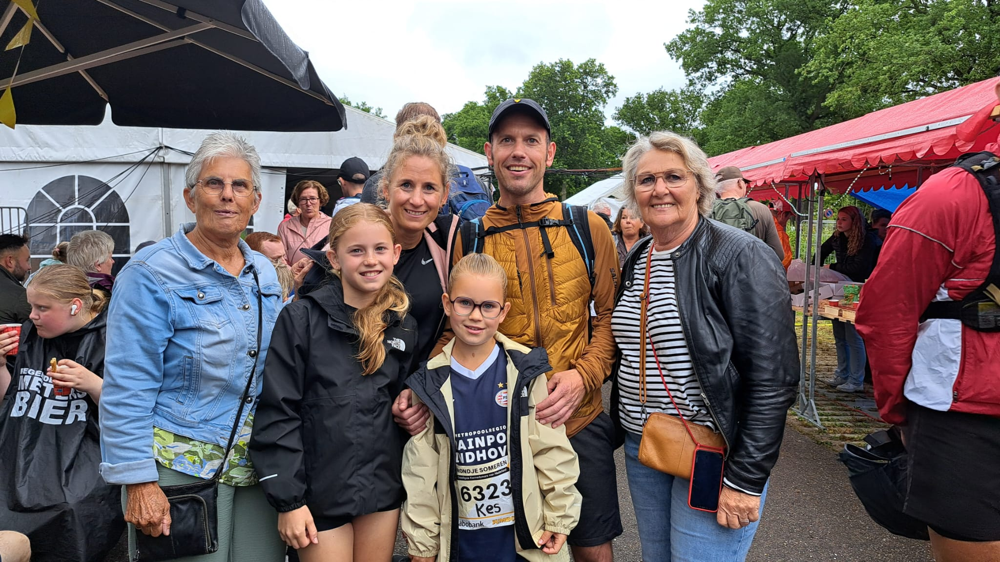

<!DOCTYPE html>
<html>
<head>
  <meta charset="utf-8" />
  <title>Kaart Kennedymars Someren</title>
  <meta name="viewport" content="width=device-width, initial-scale=1.0" />

  <!-- Leaflet CSS -->
  <link rel="stylesheet" href="https://unpkg.com/leaflet/dist/leaflet.css" />
  <!-- Leaflet JS -->
  <script src="https://unpkg.com/leaflet/dist/leaflet.js"></script>
  <!-- Leaflet Omnivore (voor .kml) -->
  <script src="https://unpkg.com/leaflet-omnivore/leaflet-omnivore.min.js"></script>

  <style>
    #map {
      height: 100vh;
    }
  </style>
</head>
<body>
  <div id="map"></div>

  <script>
  const startIcon = L.icon({
    iconUrl: 'start.png',
    iconSize: [32, 37],
    iconAnchor: [16, 37],
    popupAnchor: [0, -30]
  });

  const finishIcon = L.icon({
    iconUrl: 'finish.png',
    iconSize: [32, 37],
    iconAnchor: [16, 37],
    popupAnchor: [0, -30]
  });

  const map = L.map('map').setView([51.426158, 5.723665], 13);

  L.tileLayer('https://{s}.tile.openstreetmap.org/{z}/{x}/{y}.png', {
    attribution: '&copy; OpenStreetMap'
  }).addTo(map);

  const routeLayer = omnivore.kml('route.kml')
    .on('ready', function () {
      map.fitBounds(this.getBounds());

      this.eachLayer(function (layer) {
        if (layer instanceof L.Marker) {
          routeLayer.removeLayer(layer);
        }
      });

      let line;
      this.eachLayer(function (layer) {
        if (layer instanceof L.Polyline) {
          line = layer;
        }
      });

      if (line) {
        const latlngs = line.getLatLngs();
        const start = latlngs[0];
        const end = latlngs[latlngs.length - 1];

        // Start- en eindmarker
        // L.marker(start, { icon: startIcon }).addTo(map).bindPopup('<h3>Startpunt</h3><p>De wandeling begint hier! Je kunt het!</p>');
        // L.marker(end, { icon: finishIcon }).addTo(map).bindPopup('<h3>Eindpunt</h3><p>Gefeliciteerd, je bent er!</p>');

        // Popup 1 – Wilhelminaplein - Someren - tekst foto video
        L.marker(start, { icon: startIcon })
          .addTo(map)
          .bindPopup(`
            <h3>Daniëlle Bankers - Someren</h3>
            
            <p> <strong>Tijd:</strong> Zaterdag, 19:30<br>
            <strong>Wie:</strong> Daniëlle Bankers (43) uit Asten loopt de Kennedymars voor de zestiende keer. ,,Ik loop de tocht alleen in Someren, die vind ik het gezelligst”, vertelt ze een klein half uur voor het startschot klinkt. ,,Vroeger was het eerlijk gezegd nog gezelliger, toen liepen we ook door Heusden. Het is jammer dat ze dat uit de route hebben gehaald.” Ze hoopt morgen aan het einde van de ochtend binnen te zijn. ,,Geoefend heb ik niet, gewoon verstand op nul en lopen”, zegt de Astense met een grote lach.<br></p>
            <strong>Bekijk hier een video bij de start</strong></p>
            <video width="250" controls>
              <source src="vidkmsomeren.mp4" type="video/mp4">
            </video>
          `);

        // Popup 2 – Onze Lieve Vrouweplein - Ommel - tekst foto video
        L.marker(latlngs[306])
          .addTo(map)
          .bindPopup(`
            <h3>Britt Kessels - Ommel</h3>
            
            <p> <strong>Tijd:</strong> Zaterdag, 21:55<br>
            <strong>Wie:</strong> Nadat ze de afgelopen drie jaar al als vrijwilliger aan de Kennedymars verbonden was, is Britt Kessels dit jaar voor het eerst postcoördinator. Dit is in Ommel op het Onze Lieve Vrouweplein. ,,Samen met mijn team zorg ik ervoor dat de wandelaars wat te eten en te drinken krijgen”, vertelt ze terwijl ze druk bezig is met bouillon in te schenken. Zelf liep ze al vier keer de wandeltocht, maar door extreem pijnlijke voeten is ze nu vrijwilliger. ,,Dat bevalt prima, en zeker in Ommel. De sfeer is hier altijd geweldig.” Toch is ze best een beetje zenuwachtig voor het debuut: ,,Ik wil uiteraard wel dat het goed verloopt.”<br></p>
            <strong>Bekijk hier een video bij de post in Ommel</strong></p>
            <video width="250" controls>
              <source src="vidkmommel.mp4" type="video/mp4">
            </video>
            
          `);
        
        // Popup 3 – Vlierdensweg - Vlierden/Deurne - tekst foto
        L.marker(latlngs[343])
          .addTo(map)
          .bindPopup(`
            <h3>Theo van Dooren - Vlierden</h3>
            
            <p> <strong>Tijd:</strong> Zaterdag, 22:15<br>
            <strong>Wie:</strong> Het begint om kwart over 10 hard te regenen wanneer de eerste snelwandelaar Vlierden bereikt. ,,Ik dacht dat de snelsten zo rap zijn dat ze de regen te vlug af zijn", grapt Theo van Dooren. Hij heeft zich met flink wat familie en vrienden verzameld in de voortuin van zijn schoonzus Franka van den Heuvel. Genietend van bier en borrelhapjes. Van Dooren (76) weet wat het is om in de Kennedymars alles te geven. ,,Ik liep hem vijf keer als twintiger. Recht vanuit het café. Zonder training." Dat eiste dan zijn tol. ,,Het hele lijf deed pijn. Ik ging meteen naar bed."<br></p>
            <strong>Bekijk hier een video uit Vlierden</strong></p>
            <video width="250" controls>
              <source src="vidkmvlierden.mp4" type="video/mp4">
            </video>
            
          `);
        
        // Popup 4 – Frieslandpad - Rijpelberg/Helmond - tekst foto
        L.marker(latlngs[479])
          .addTo(map)
          .bindPopup(`
            <h3>Hailey, Jill en Lyra - Rijpelberg</h3>
            
            <p> <strong>Tijd:</strong> Zondag, 01:15<br>
            <strong>Wie:</strong> High-fivend ontvangen Hailey (8) en Jill (8) Verlijsdonk voorbijkomende lopers. Uiteindelijk wachten ze vooral op één persoon. Hun vader loopt nog ergens in Deurne. ,,Zelf wil ik ook ooit de Kennedymars lopen", zegt Hailey. ,,Later." Zus Lyra (10) ligt op een dekentje in het gras als de twee enthousiast doorgaan. ,,Iedereen is blij als ze een high five krijgen", zegt Jill. ,,En ze hebben weer meer motivatie", vult Hailey aan. Er komen nieuwe lopers aan, dus de twee springen weer in positie.<br></p>
            <strong>Bekijk hier een video uit Rijpelberg</strong></p>
            <video width="250" controls>
              <source src="vidkmrijpel.mp4" type="video/mp4">
            </video>
            
          `);
        
        // Popup 5 – De Veste - Brandevoort/Helmond - tekst foto
        L.marker(latlngs[631])
          .addTo(map)
          .bindPopup(`
            <h3>Wim Dekkers - Brandevoort</h3>
            
            <p> <strong>Tijd:</strong> Zondag, 02:53<br>
            <strong>Wie:</strong> Voor de dertiende keer loopt Wim Dekkers (74) uit Zeeland (Noord-Brabant) de mars. ,,Het gaat goed", zegt hij. ,,Ik loop nog lekker door." Zijn doel? Vóór negen uur weer voet zetten op het Wilhelminaplein. ,,Als ik niet te lang blijf kletsen kan dat", klinkt het met een lach. Dekkers heeft een rits gezondheidsklachten, waaronder maar één nier. De tocht is een uitdaging. ,,Daar houd ik van. Ik wil voor mezelf presteren." Na zijn boterham kaas zet hij voort. ,,Het is gezellig. Mensen hebben goeie zin."<br></p>
            <strong>Bekijk hier een video bij de post in Brandevoort</strong></p>
            <video width="250" controls>
              <source src="vidkmbrandevoort.mp4" type="video/mp4">
            </video>
            
          `);

        // Popup 6 – Sporthal - Lierop - tekst foto video
        L.marker(latlngs[815])
          .addTo(map)
          .bindPopup(`
            <h3>Tonny van den Burg - Lierop</h3>
            
            <p> <strong>Tijd:</strong> Zondag, 08:20<br>
            <strong>Wie:</strong> 'Mister Kennedymars' Tonny van den Burg is ook weer van de partij. Alle zestig vorige edities van Kennedymars Someren liep hij uit. Nu gaat de inmiddels 78-jarige veteraan voor nummer 61. En hij oogt nog altijd even fit. Klokslag 8.20 grist hij een mueslireep van de tafel bij een verzorgingspost in Lierop, voor onderweg. ,,Ik train nog altijd drie keer per week 8 kilometer." Op zijn lijf lijkt maar geen sleet te komen. ,,Maar ik kan me nog niet rijk rekenen voordat ik over de streep kom.”<br></p>
            <strong>Bekijk hier een video bij de post in Lierop</strong></p>
            <br>
            <video width="250" controls>
              <source src="vidkmlierop.mp4" type="video/mp4">
            </video>
            
          `);

        // Popup 7 – Kerkedijk/Eggendreef - Someren-Heide - tekst foto
        L.marker(latlngs[881])
          .addTo(map)
          .bindPopup(`
            <h3>Familie van Bree - Someren</h3>
            
            <p> <strong>Tijd:</strong> Zondag, 11:24<br>
            <strong>Wie:</strong> Bij de Soete Inval pauzeert familie Van Bree even. ,,Het gaat goed. Mijn voeten doen wel pijn", zegt Jip (12). Haar zusje Kes (10) geniet van haar worstenbroodje. Vader Twan (44) en moeder Henke (40) liepen de langere toch al tien keer, maar doen het graag wat rustiger aan voor de kids. ,,Als ze oud genoeg zijn, lopen we de tachtig." Oma Helma van Bree en haar vriendin Jacqueline Driessen volgen het Somerense viertal. ,,Via de app." Ze zien elkaar bij de Meet & Greet. ,,Vanmiddag doen we niets meer!"<br></p>
            <strong>Bekijk hier een video bij de Meet & Greet</strong></p>
            <br>
            <video width="250" controls>
              <source src="vidkmsoete.mp4" type="video/mp4">
            </video>
            
          `);

      // Wandelend poppetje toevoegen
        const walkerIcon = L.icon({
          iconUrl: 'loper.png',
          iconSize: [25, 25],
          iconAnchor: [16, 16]
        });

        const walker = L.marker(start, { icon: walkerIcon }).addTo(map);
        let i = 0;

        function moveWalker() {
          if (i < latlngs.length) {
            walker.setLatLng(latlngs[i]);
            i++;
            setTimeout(moveWalker, 100); // snelheid aanpassen
          }
        }

        moveWalker(); // start animatie
      }
    })
    .addTo(map);
  </script>
</body>
</html>
